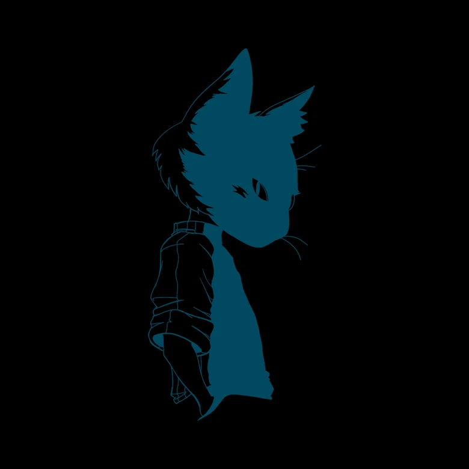

O renascimento de Yun Li
Yun Li
Validation
Bittersweet Memories
13 Lentes de Um Final Feliz
albúns
Yun Li
O Yun Li foi um artista criado pelo Victor schiavon, também conhecido como Gemaplys
Validation
Validation é um albúm lançado pelo artista yun li ou Gemaplys, sendo o primeiro da trilogia "Validation"(bem sem criatividade né?), ele foi criado como um albúm para a validação do Yun Li e do produtor Biffe, vindo com músicas vindas para um ambito mais para os amigos, além de ser o primeiro albúm serio de ambos
Bittersweet Memories
Bittersweet Memories sendo o segundo da trilogia, traz músicas mais voltadas para o antro familiar, sendo a sua validação para a sua família
13 Lentes de Um Final Feliz
13 Lentes de um final Feliz sendo o terceiro e último da trilogia, sendo um mix dos albúns anteriores, além de possuir temas mais tristes na maioria de suas músicas